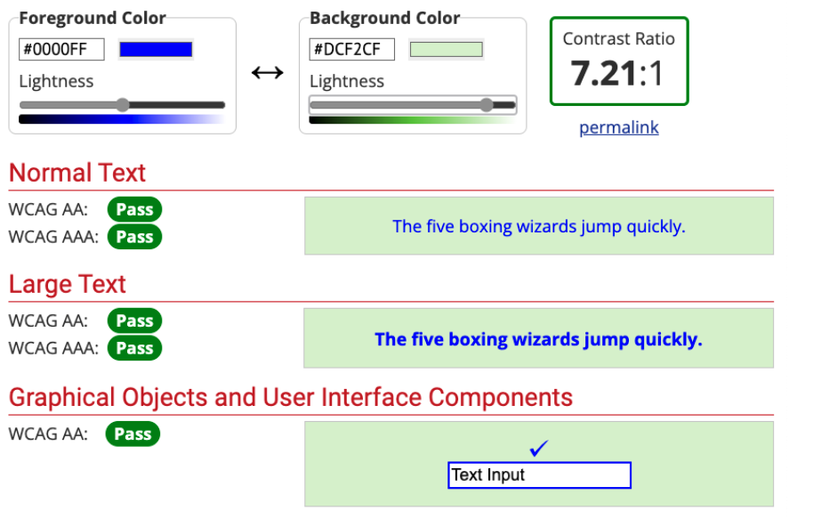

Modul 7 · Kapitel 7.2
Färg, kontrast och navigering
Text, länkar och menyer ska vara lätta att hitta, läsa och använda.
Mål
Efter kapitlet ska du kunna...
- förklara varför kontrast påverkar läsbarhet
- undvika att färg är den enda informationsbäraren
- skapa tydliga länkar, fokuslägen och navigation
Kontrast
Texten måste skilja sig från bakgrunden
Kontrast handlar om skillnaden i ljushet mellan text och bakgrund.
Två olika färger ger inte automatiskt tillräcklig kontrast.
Jämför
Synligt är inte alltid läsbart
Läsbarheten måste bedömas när färgerna används tillsammans.
Färgblindhet
Alla skiljer inte färger på samma sätt
En vanlig form är röd–grön färgblindhet.
- Var försiktig med rött och grönt tillsammans.
- Använd inte färg som enda ledtråd.
Färgkombinationer
Färgblindhet och chromostereopsis
text: #F00, bakgrund: #0F0text: #0F0, bakgrund: #F00text: #F00, bakgrund: #00Ftext: #00F, bakgrund: #F00text: #0F0, bakgrund: #00Ftext: #00F, bakgrund: #0F0Chromostereopsis
När färger verkar vibrera eller ligga på olika djup
Chromostereopsis är ett synintryck där starka färger bredvid varandra kan upplevas ligga på olika djup.
Det kan uppstå när färger med olika våglängder, exempelvis mättat rött och blått, placeras tätt tillsammans.
Resultatet kan bli att bokstävernas kanter verkar vibrera. Då blir längre text obehaglig och svårare att läsa.
Mättad röd
#FF0000 kan aldrig nå 7:1
| Kombination | Kontrast | 7:1? |
|---|---|---|
| Röd på vit | 4,00:1 | Nej |
| Röd på svart | 5,25:1 | Nej |
Svart ger den högsta möjliga kontrasten mot #FF0000, men når bara 5,25:1. Därför finns ingen bakgrundsfärg som kan få ren röd att klara 7:1.
Interaktiv färg- och kontrastkontroll
Samma kontroll som i kapitel 3.2
#172026#FFFFFFExempeltext på en webbsida
Byt färger och kontrollera om texten fortfarande går att läsa utan ansträngning.
Prova själv
Testa röd text i WebAIM
- Öppna WebAIM Contrast Checker.
- Sätt foreground till
#FF0000. - Ändra background.
- Jämför normal text, stor text och gränssnittskomponenter.
- Bedöm även om färgerna känns bra att läsa.
Contrast Checker
Verktyget visar testresultatet

Verktyg och bedömning
Ett godkänt värde är inte hela svaret
- Kontrollera kontrastresultatet.
- Läs texten i sin riktiga storlek.
- Bedöm om färgkombinationen känns stabil och tydlig.
- Testa på sidan där färgerna ska användas.
Länktexter
Säg vart länken leder
Klicka här
Se schemat för kursen
Länktexten ska gå att förstå utan att användaren behöver gissa.
Fokus
Tangentbordsanvändaren måste se var den är
a:focus {
outline: 3px solid #e67e00;
outline-offset: 4px;
}Ta inte bort fokusmarkeringen utan att ersätta den med en tydlig egen stil.
Interaktivt fokus
Tryck Tab och följ markeringen
Tryck Tab direkt. Fortsätt tabba genom länkarna och knappen.
Den orange konturen visar vilket element som har fokus.
Navigation
Gör den förutsägbar
- Använd tydliga namn.
- Placera navigationen konsekvent.
- Låt länkar och knappar fungera med tangentbord.
- Visa fokus tydligt.
Kontrollera sidan
Fyra frågor
- Går texten att läsa mot bakgrunden?
- Förmedlas viktig information med mer än färg?
- Säger länktexterna vart länkarna leder?
- Syns fokus när du navigerar med Tab?
Sammanfattning
Kom ihåg
- Kontrast handlar om skillnad i ljushet.
- Starka färger är inte automatiskt lättlästa.
- Färg får inte vara den enda informationsbäraren.
- Länktexter ska vara tydliga.
- Tangentbordsfokus måste synas.
- Navigationen ska vara konsekvent och användbar.